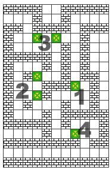
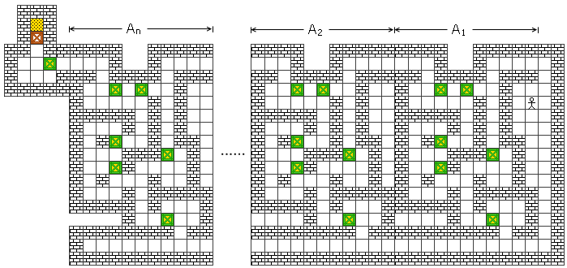

经典证明：推箱子游戏所需步数可达指数级
今天在写一个稿件时又翻阅了一下Erich Friedman的Math Magic，发现了一个有趣的东西——场地大小为n的推箱子游戏所需要的最少步数最坏情况是多少。下面这个构造说明，最坏情况至少也是指数级的。
首先，让我们来看看该构造中的一个基本单元：

这个构造中共有6个箱子，且它们都已经在目的位置上了。不难看出：
1. 假如你人在这个区域之外，你只可能从右上角的出入口进入该区域，从其它地方进去都会导致死局
2. 从右上角进入后你只能往下走，进入1区；走左边的话直接导致死局
3. 你可以通过2区前往3区，但若从3区左上角的出口出去了，则2区动过的箱子将永远无法回到原位（除非你原路返回）
4. 你可以通过2区前往3区，并把3区左边的那个箱子左移一格，再返回2区；这样下次你再从右上角进入该区域时便可以直接经过3区从左上角出去
5. 最后你只能从4区离开

把n个这样的构造串联起来，从右至左分别记作A_1, A_2, ..., A_n。再在A_n左边附加一个只进不出的机关和一个需要移动一下的箱子。因此，整个图一共有6n+2个箱子，只有一个箱子不在目标位置。你的任务就是从A_1的最右边一直杀到A_n的最左边，并且保证此时A_1到A_n的所有箱子仍在原位上；然后进入A_n的左上角那块附加区域，把那个箱子推进去。
不难看出，这个构造的唯一解便是从A_1的右上角进去，经过A_1的1区和2区，把A_1左上角的那个箱子向左推一格，然后从A_1下方出来；再次从A_1右上角进入，直接左行并从左上角出去，来到A_2的右上角；然后绕行A_2的1区和2区，把A_2左上角的箱子向左推一格，再从A_2下端出来。但注意到，此时A_1的状态又被还原了，你又无法直接从A_1左上角出去了；为了进入A_3，你不得不又重复刚才做的事情，把A_1左上角的箱子左移，出去之后再进来一遍。而进入A_3后，A_1和A_2的状态又都被还原了，于是你又不得不递归地处理A_1和A_2。因此，整个棋局的移动的步数显然是指数级的。